Bench Press
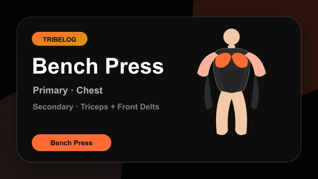
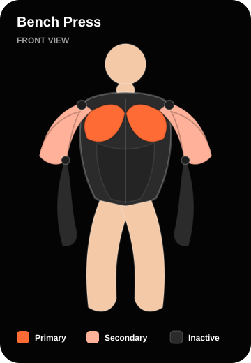
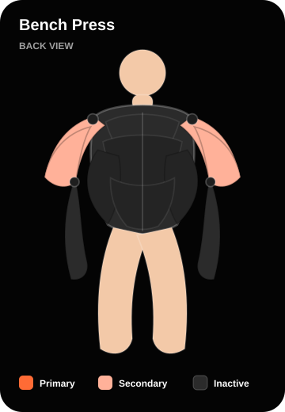
workouts/exercises/v1/bench_press/demo.lottie.jsonDumbbell Bench Press
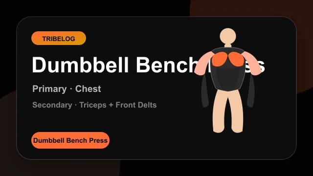
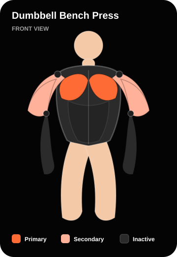
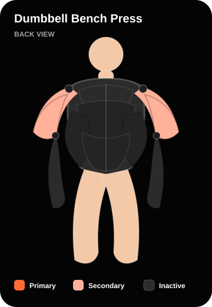
workouts/exercises/v1/dumbbell_bench_press/demo.lottie.jsonIncline Dumbbell Press
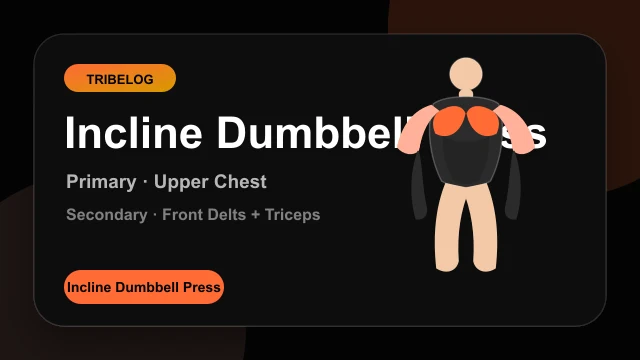
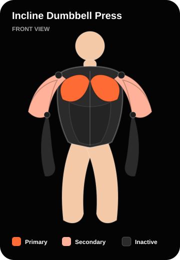
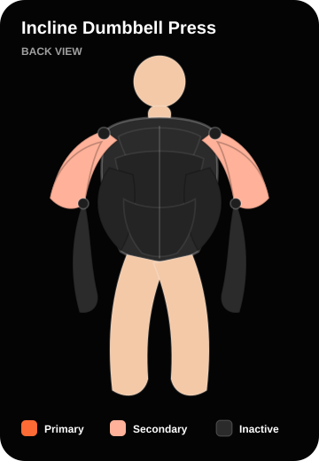
workouts/exercises/v1/incline_dumbbell_press/demo.lottie.jsonPush-Up
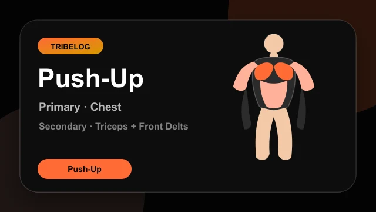
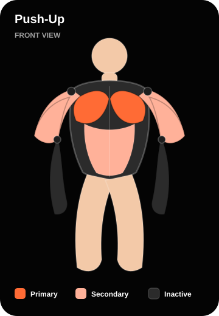
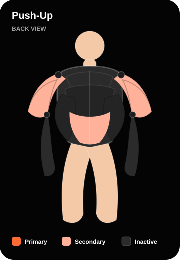
workouts/exercises/v1/push_up/demo.lottie.jsonMachine Chest Press
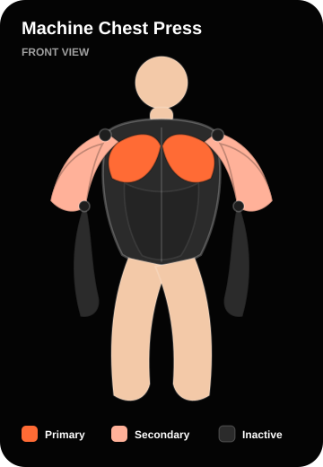
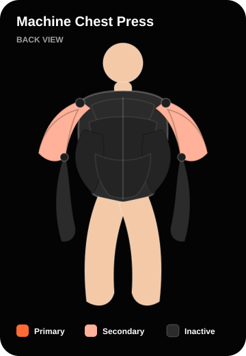
workouts/exercises/v1/machine_chest_press/demo.lottie.jsonDumbbell Shoulder Press
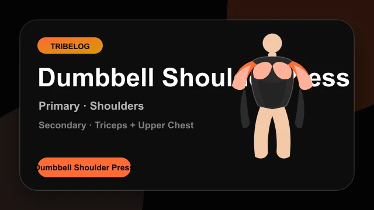
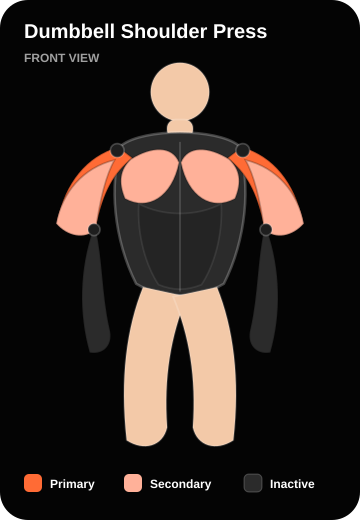
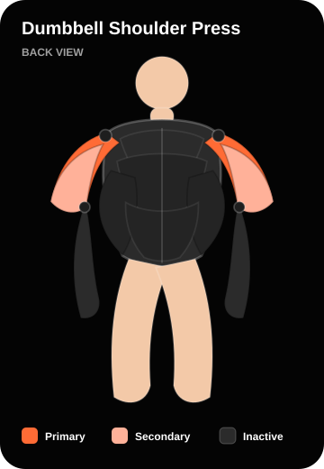
workouts/exercises/v1/dumbbell_shoulder_press/demo.lottie.jsonLateral Raise
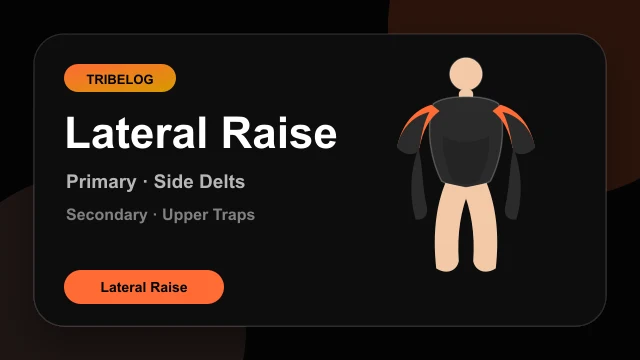
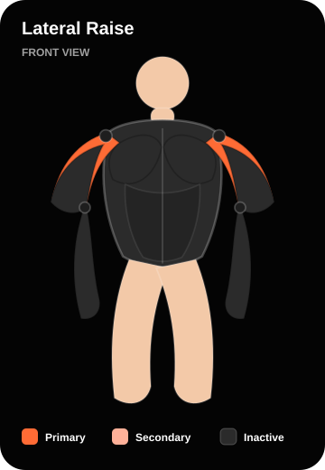
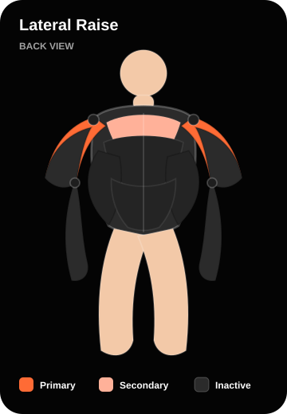
workouts/exercises/v1/lateral_raise/demo.lottie.jsonDumbbell Chest Fly
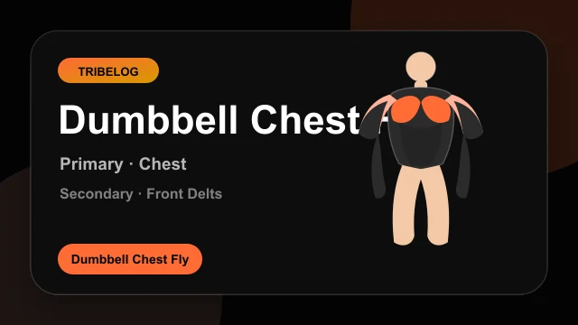
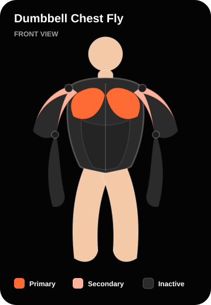
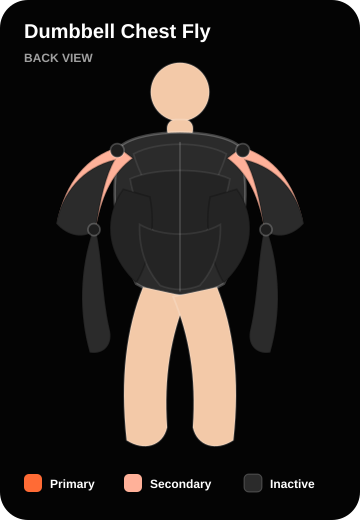
workouts/exercises/v1/dumbbell_chest_fly/demo.lottie.jsonTriceps Pushdown
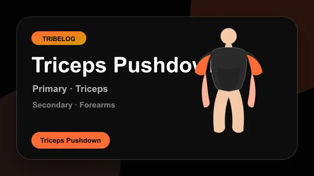
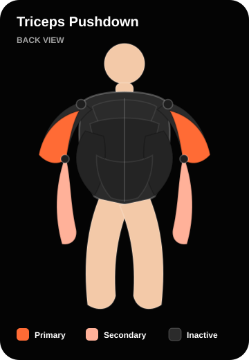
workouts/exercises/v1/triceps_pushdown/demo.lottie.jsonBench Dip
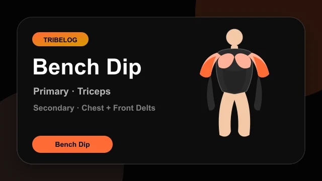
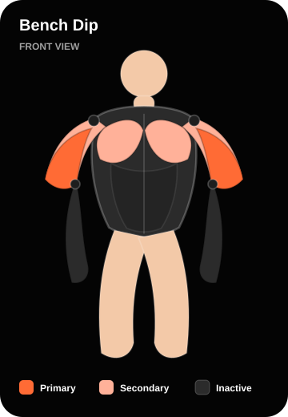
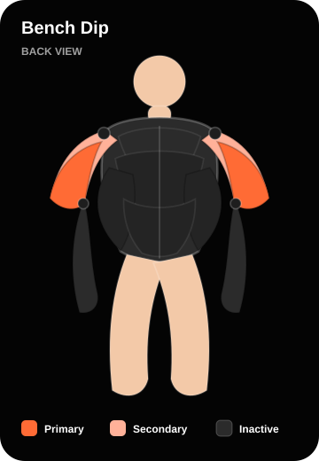
workouts/exercises/v1/bench_dip/demo.lottie.json